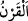

“Müşrikler görmüyorlar” bilmiyorlar “mı ki, onlardan önce nice kavimler helâk
ettik.” Yani yalanlamaları yüzünden onlardan öncekilerden az önce zikredilenlerden ve
başkalarından pek çoğunu helâk ettik.
“ aynı asırda yaşamış topluluk demektir.
Bu âyet Mekke müşriklerine ibret almaları ve şirkten dönmeleri için geçmiş
ümmetlerin azâbının misli ile tehdiddir.
“Onlar tekrar dönüp de bunlara gelmezler.” Yani Mekkeliler geçmiş kavimleri ve
eski ümmetleri çok helâk ettiğimizi bilmediler mi ki o helâk olup gidenler artık bu
müşriklere dönmeyeceklerdir. Yani onlar öyle helâk edilmişlerdir ki onlar için bir daha
dünyaya dönüş yoktur. Onlar ibret almıyorlar mı? Neden uyanmıyorlar? Nasıl onlar
eskiden oldukları hale dönemeyecek şekilde geçip gittiler ve yok oldularsa, aynı şekilde
Mekke müşrikleri de helâk olacak, onların ardından yok olacaklar ve bir daha geri
dönmeyeceklerdir.
Bazıları der ki: Onlar görmezler mi ki onların dünyadan çıkması, onlardan birinin
evinden çarşıya yahut başka bir beldeye çıkıp orada iş ve maslahatlarını tamamladıktan
sonra evine dönmesi gibi değildir. Bilakis o dünyadan ebedî olarak ayrılmıştır.
Öncekilerden helâk olanların bir daha bunlara dönmemeleri, tamamen helâk
olmalarından ibarettir.
Mânânın şöyle olması da mümkündür: Geri kalanlar bir sebeple veya doğum ile helâk
edilenlere dönemezler. Çünkü biz onların nesillerini kestik ve onları helâk ettik.
Nitekim et-Tefsîru’l-Kebîr’de böyle geçmektedir.
Selman Fârisî (r.a.) ne zaman bir harabeden geçse, durur, âh u figan ile inlerdi ve o
yerden geçip gidenleri hatırlardı. Derdi ki: “Bu binaları dikenler ve meskeni yapanlar
neredeler? O köşkleri süslemeye gönül verdiler, bu uğurda canı ve malı kaybettiler.
Onlara gönül bağladıklarında gül gibi açıldılar, sonra yapraklarını döktüler ve toprakta
uykuya daldılar.”
Yüksek saraylarda konaklayana ikametinden sor!
Hayatın nimet ve külfetiyle safâ ve cefâlardan kurtulmuş
Mülk ve saltanata kurulup insanları kendine kul etmişken
Ölüm elçisi/meleği onu alnı üzere yatırır/canını alır.
Bu âyet öldükten sonra bazı insanların kıyametten önce tekrar dünyaya döneceğini
iddiâ edenlerin (ehl-i ric’at) görüşünü reddeder. Nitekim İbn Abbâs (r.a.)’tan rivâyet
edildiğine göre kendisine bir topluluğun kıyametten önce Hz. Ali (r.a.)’ın tekrar dünyaya
gönderileceğini iddiâ ettikleri söylendi. İbn Abbâs (r.a.): “O zaman biz ne kötü bir
topluluğuz. Onun (dul kalan) hanımlarıyla evlendik ve mîrâsını taksim ettik.” dedi. Yani
eğer o geri dönecekse, diri demektir. Diri olan birinin hanımları ile evlenilemez ve
mirası da taksim edilemez. Nitekim fukaha şöyle demiştir: Bir kadına kocasının vefat
haberi ulaştığı zaman iddetini bekler, bir başkasıyla evlenir ve bir de çocuk doğurursa,